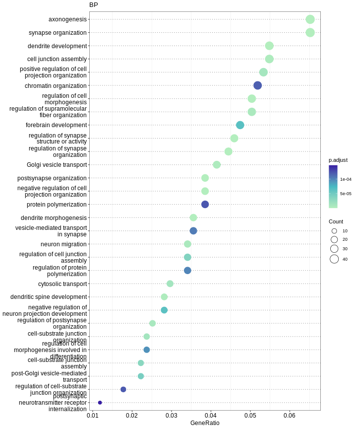
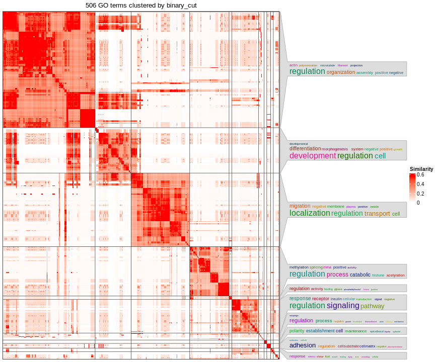
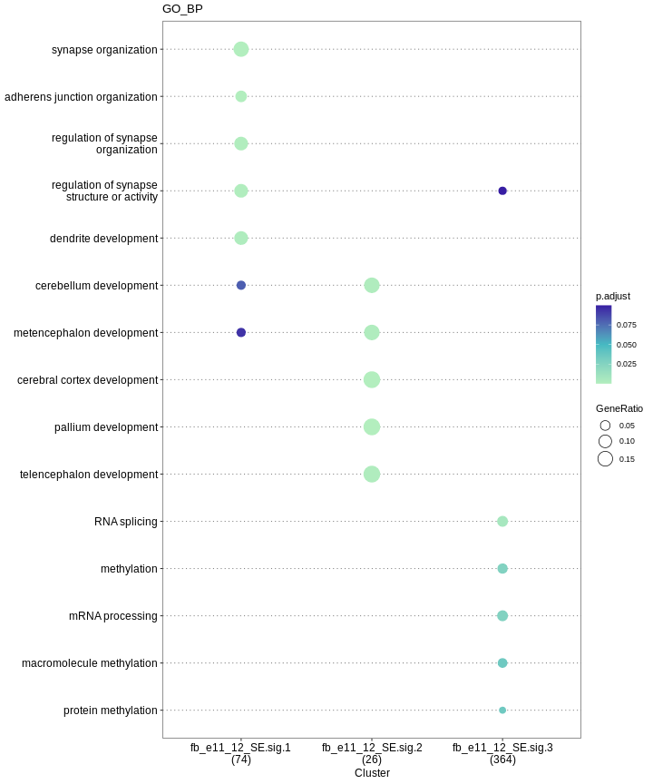
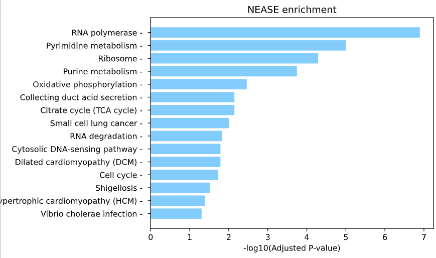

功能富集分析
过表达富集分析
enrich 用于执行过表达富集分析，支持GO,GEKK, Reactome。基于clusterProfile
和 ReactomePA
实现。此外也基于simplifyEnrichment
提供GO term富集结果聚类功能。
参数设置如下：
- -i: 输入文件
- -od: 输出目录
- -db： 数据库 [GO|KEGG|Reactome]
- -ont: GO ontology [ALL|BP|CC|MF]
- -pval : p-value
- -qval : q-value
- -org : 物种, ‘hs’ for human, ‘mm’ for mouse
- --simple: 简化GO富集结果
- -gene_id： gene ID 类型
示例
$ mkdir output/enrich -p
$ astk enrich -i result/fb_e11_based/sig01/fb_e11_13_SE.sig.dpsi \
-ont BP -qval 0.1 -orgdb mm -fmt png \
-od output/enrich/fb_e11_13_SE --simple
$ tree output/enrich/fb_e11_13_SE
img/enrich/fb_e11_13_SE_doc_sc
├── GO.BP.qval0.1_pval0.1.csv
├── GO.BP.qval0.1_pval0.1.png
└── simgo
├── GO_BP_simple.csv
└── GO_BP_simple.png
1 directory, 4 files
GO.BP.qval0.1_pval0.1.csv 是文本形式的富集结果， GO.BP.qval0.1_pval0.1.png为图片 
GO_BP_simple.csv 为GO terms 简化聚类结果，GO_BP_simple.png 为图片

功能富集比较
enrichCompare 用于不同组功能富集结果比较 。ecmp 为别名。 参数设置如下：
- -i: 多个输入文件
- -od: 输出目录
- -db： 数据库 [GO|KEGG|Reactome]
- -ont: GO ontology [ALL|BP|CC|MF]
- -pval : p-value
- -qval : q-value
- -org : 物种, ‘hs’ for human, ‘mm’ for mouse
- -gene_id： gene ID 类型
示例
$ astk ecmp -i result/fb_e11_based/lenc/*/fb_e11_12_SE.sig.dpsi \
-ont BP -org mm -fmt png \
-od output/enrich/fb_e11_12_SE_lc

NEASE
nease 为基于可变exon的结构注释的网络富集分析, 基于NEASE发展而来。目前只支持人。
参数设置如下：
- -i: dpsi file
- -od : output directory
- -pval : p-value
- -org : 只能设置为Human
- -db: NEASE 支持数据库,[PharmGKB|HumanCyc|Wikipathways|Reactome|KEGG|SMPDB|Signalink|NetPath|EHMN|INOH|BioCarta|PID]
示例：
mkdir output/nease
astk nease -i result/ni_adj_ct/sig01/0_3_SE.sig.dpsi \
-pval 0.1 -db Reactome KEGG -od output/nease/ni_0_3_SE
